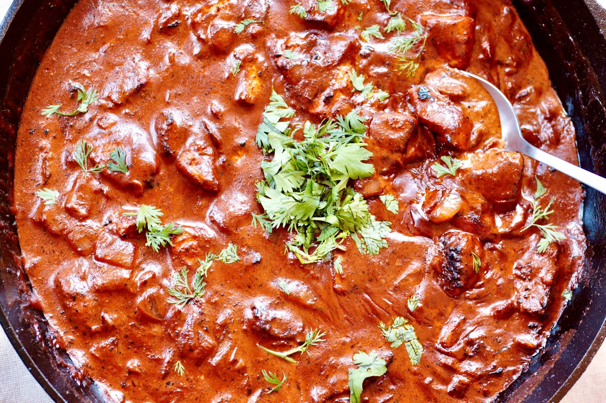

Home
Butter Chicken Recipe

Description
Butter Chicken is typically a mild curry consisting of chicken pieces marinated in yoghurt and spices.
And cooked in a creamy tomato-based sauce.
Ingredients
- 1/2 Cup plain yoghurt
- 1 tbsp lemon juice
- 1 tsp tumeric powder
- 2 tsp garam masala
- 1/2 tsp chilli powder or cayenne pepper powder
- 1 tsp ground cumin
- 1 tbsp ginger, freshly grated
- 2 cloves garlic, crushed
- 1.5 lb / 750 g chicken thigh fillets, cut into bite size pieces
- 2 tbsp (30 g) ghee or butter
- 1 cup tomato passata
- 1 cup heavy / thickened cream
- 1 tbsp sugar
- 1 1/4 tsp salt
Steps
- For an extra smooth sauce, combine the Marinade ingredients (except the chicken) in a food processor and blend until smooth.
- Combine the Marinade ingredients with the chicken in a bowl. Cover and refrigerate overnight, or up to 24 hours
- Heat the ghee (butter or oil) over high heat in a large fry pan. Take the chicken out of the Marinade but do not wipe or shake off the marinade from the chicken but dont pour the Marinade left in the bowl into the fry pan.
- Place chicken in the fry pan and cook for around 3 minutes, or until the chicken is white all over
- Add the tomato passata, cream, sugar and salt. Also add any remaining marinade left in the bowl. Turn down to low and simmer for 20 minutes. Do a taste test to see if it needs more salt.
- Serve immediately
Tips
You're a profession chef you got this xD